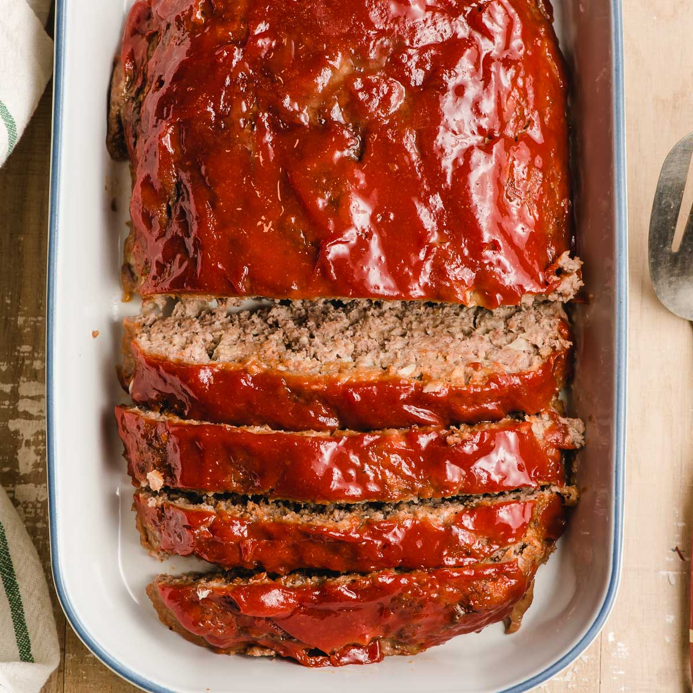

Meatloaf

Description
This is one of the most simple meatloaf recipes. It's one of the first recipes my mom taught me as a little tike. I'm happy to share this classic American home staple for you to try as well!
Ingredients
- 1 pound of ground beef
- 1/2 cup of rolled oats
- 1 large egg
- 1/8 teaspoon of salt
- 1/8 teaspoon of ground black pepper
- 1.5 ounce packet of meatloaf seasoning
- 1/4 cup of ketchup
Steps
- Preheat the oven to 350°F.
- In a large mixing bowl, combine the ground beef, oats, egg, salt, pepper and meatloaf seasoning. Mix until there is an even spread of ingredients throughout the meat.
- Form the meat into a loaf and place on a baking sheet.
- Top the loaf with ketchup and bake uncovered for about 40 minutes or until bubbly.
Home